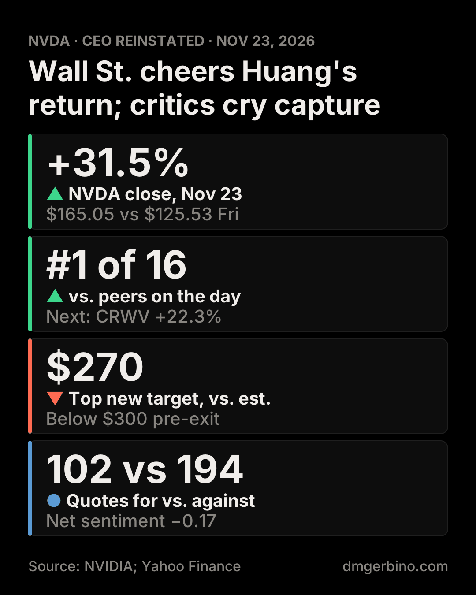

Infographic

Downloads: Infographic (SVG) · All quotes (reactions.json) · Snapshot (JSON) · Market data (JSON)

Key takeaways
Market reaction
E. NVDA price and when reactions landed
Analysts have not restored pre-exit price targets
Each row is one firm: hollow dot is the prior target, filled dot the current one. The vertical line is today's price.
The AI supply chain rallied harder than GPU rivals
Same-day % move. NVDA in blue, others in gray. The dashed line is the Nasdaq.
Fundamentals and technicals
Reaction sentiment
A. Stance by group
Share of each group's quotes. Oppose extends left of center, support right; mixed and neutral straddle the middle.
B. Average sentiment by group
Large dot is the group mean; faint dots are the individual quotes behind it.
C. Every quote, one strip per group
Same −1 to +1 scale in every panel, so spreads compare directly. Hover a dot to read the quote.
D. Sentiment over time
Running average sentiment of time-stamped quotes (top) and quotes per hour (bottom), Eastern time.
F. Net sentiment against the overall average
Bar is the group mean. Gray bands mark negative, neutral, and positive ranges; the vertical tick is the overall mean.